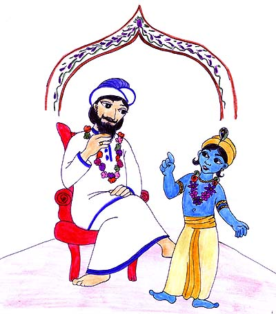

|  |
Un día el padre del pequeño Gopal, quería hacer un sacrificio para el Semidiós del cielo, a quien se le conoce como Indra. Así todos los aldeanos de Vrindabana estaban muy ocupados haciendo los preparativos del sacrificio. Gopal al notar que todos estaban debidamente ocupados en la preparación del sacrificio, fue donde su padre, Nanda Maharaja y le pregunto: ¿Para quién preparas todo esto? Nanda Maharaj le respondió: "Estamos haciendo esta ofrenda para Indra, ya que el nos provee de sus lluvias, las que son tan importantes para nuestras tierras y vacas". Pero Gopal dijo: "Padre mejor hagamos una hermosa ofrenda para la colina de Govardhan. Nuestro Govardhan es mas importante ya que en ella nuestras vacas pastan diariamente y nosotros jugamos mientras llevamos el rebaño." Nanda Maharaja después de haber pensado en lo que su querido Gopal había dicho, aprobó la idea, y fue junto a Gopal a mirar como las preparaciones para la ofrenda estaban siendo terminadas.
|